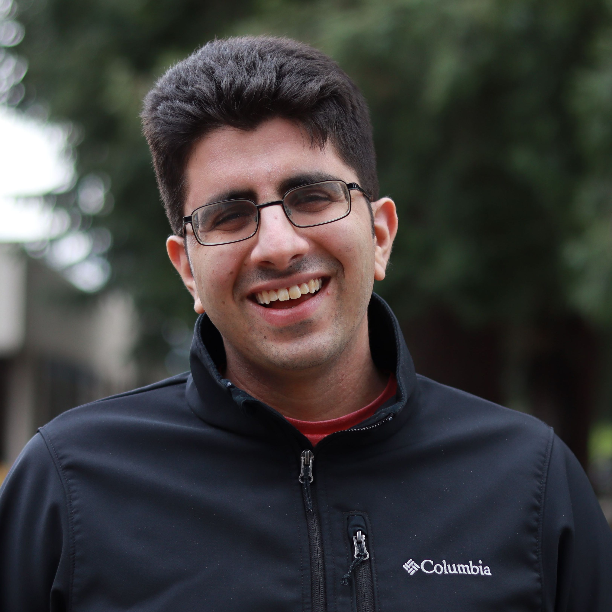

Qian Li, Peter Kraft
ACM Queue.

Co-founder & CTO of DBOS, Inc. and Stanford CS PhD. Loves databases and distributed systems.
peter.kraft [at] dbos.dev
I recently completed my PhD at Stanford and am now co-founding DBOS, Inc. to make it easy for developers to build scalable, reliable, and secure applications!
In graduate school, I studied computer science (particularly databases and systems research) and was advised by Matei Zaharia and Peter Bailis. In my PhD, I worked on the DBMS-oriented Operating System (DBOS) academic project (CIDR 2022, VLDB 2022), which our startup is now commercializing. I was particularly involved in Epoxy (VLDB 2023) and Apiary (arXiv). Other projects I have worked on include Data-Parallel Actors (NSDI 2022), POP (SOSP 2021), Willump (MLSys 2020, VLDB 2020), MacroBase (Best of VLDB 2019) and Arachne (OSDI 2018). I did my undergrad at Harvard, where I worked with Margo Seltzer on my senior thesis and Alexander Rush on predicting congressional voting records from bill text (EMNLP 2016).
I also blog for DBOS at dbos.dev/blog.
* Denotes Equal Contribution
Qian Li, Peter Kraft
ACM Queue.
Liana Patel, Peter Kraft, Carlos Guestrin, Matei Zaharia
SIGMOD 2024.
Peter Kraft, Qian Li, Xinjing Zhou, Peter Bailis, Michael Stonebraker, Xiangyao Yu, Matei Zaharia
International Conference on Very Large Data Bases (VLDB) 2023.
Qian Li, Peter Kraft, Michael Cafarella, Çağatay Demiralp, Goetz Graefe, Christos Kozyrakis, Michael Stonebraker, Lalith Suresh, Xiangyao Yu, Matei Zaharia.
International Conference on Very Large Data Bases (VLDB) 2023.
Nirvik Baruah, Peter Kraft, Fiodar Kazhamiaka, Peter Bailis, Matei Zaharia.
International Conference on Very Large Data Bases (VLDB) 2023.
Paras Jain*, Peter Kraft*, Conor Power*, Tathagata Das, Ion Stoica, Matei Zaharia.
Conference on Innovative Data Systems Research (CIDR) 2023.
Qian Li, Peter Kraft, Michael Cafarella, Çağatay Demiralp, Goetz Graefe, Christos Kozyrakis, Michael Stonebraker, Lalith Suresh, Matei Zaharia.
Conference on Innovative Data Systems Research (CIDR) 2023.
Peter Kraft*, Qian Li*, Kostis Kaffes, Athinagoras Skiadopoulos, Deeptaanshu Kumar, Danny Cho, Jason Li, Robert Redmond, Nathan Weckwerth, Brian Xia, Peter Bailis, Michael Cafarella, Goetz Graefe, Jeremy Kepner, Christos Kozyrakis, Michael Stonebraker, Lalith Suresh, Xiangyao Yu, Matei Zaharia.
arXiv Preprint.
Robert Redmond, Nathan W. Weckwerth, Brian S. Xia, Qian Li, Peter Kraft, Deeptaanshu Kumar, Çağatay Demiralp, Michael Stonebraker.
International Workshop on Applied AI for Database Systems (AIDB) 2022.
Peter Kraft, Fiodar Kazhamiaka, Peter Bailis, Matei Zaharia.
Symposium on Networked Systems Design and Implementation (NSDI) 2022.
Qian Li*, Peter Kraft*, Kostis Kaffes*, Athinagoras Skiadopoulos, Deeptaanshu Kumar, Jason Li, Michael Cafarella, Goetz Graefe, Jeremy Kepner, Christos Kozyrakis, Michael Stonebraker, Lalith Suresh, Matei Zaharia.
Conference on Innovative Data Systems Research (CIDR) 2022.
Athinagoras Skiadopoulos*, Qian Li*, Peter Kraft*, Kostis Kaffes*, Daniel Hong, Shana Matthew, David Bestor, Michael Cafarella, Vijay Gadepally, Goetz Graefe, Jeremy Kepner, Christos Kozyrakis, Tim Kraska, Michael Stonebraker, Lalith Suresh, Matei Zaharia.
International Conference on Very Large Data Bases (VLDB) 2022.
Deepak Narayanan, Fiodar Kazhamiaka, Firas Abuzaid, Peter Kraft, Akshay Agrawal, Srikanth Kandula, Stephen Boyd, Matei Zaharia.
Symposium on Operating Systems Principles (SOSP) 2021.
Deeptaanshu Kumar, Qian Li, Jason Li, Peter Kraft, Athinagoras Skiadopoulos, Lalith Suresh, Michael Cafarella, Michael Stonebraker.
VLDB Workshop on Polystore Systems (Poly) 2021.
Firas Abuzaid, Peter Kraft, Sahaana Suri, Edward Gan, Eric Xu, Atul Shenoy, Asvin Ananthanarayan, John Sheu, Erik Meijer, Xi Wu, Jeff Naughton, Peter Bailis, Matei Zaharia.
The VLDB Journal, 2020. "Best of VLDB 2019" Special Issue.
Peter Kraft, Daniel Kang, Deepak Narayanan, Shoumik Palkar, Peter Bailis, Matei Zaharia.
International Conference on Very Large Data Bases (VLDB) 2020.
Peter Kraft, Daniel Kang, Deepak Narayanan, Shoumik Palkar, Peter Bailis, Matei Zaharia.
Conference on Machine Learning and Systems (MLSys) 2020.
Firas Abuzaid, Peter Kraft, Sahaana Suri, Edward Gan, Eric Xu, Atul Shenoy, Asvin Ananthanarayan, John Sheu, Erik Meijer, Xi Wu, Jeff Naughton, Peter Bailis, Matei Zaharia.
International Conference on Very Large Data Bases (VLDB) 2019.
Henry Qin, Qian Li, Jacqueline Speiser, Peter Kraft, John Ousterhout.
Symposium on Operating Systems Design and Implementation (OSDI) 2018.
Peter Kraft.
Harvard University Senior Thesis. 2017.
Aaron Kaufman, Peter Kraft, Maya Sen.
Political Analysis. 2019.
Peter Kraft, Hirsh Jain, Alexander Rush.
Empirical Methods for Natural Language Processing (EMNLP) 2016.